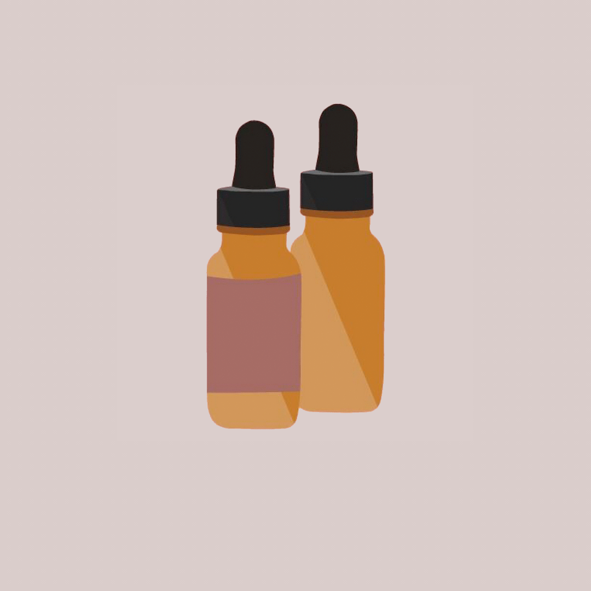
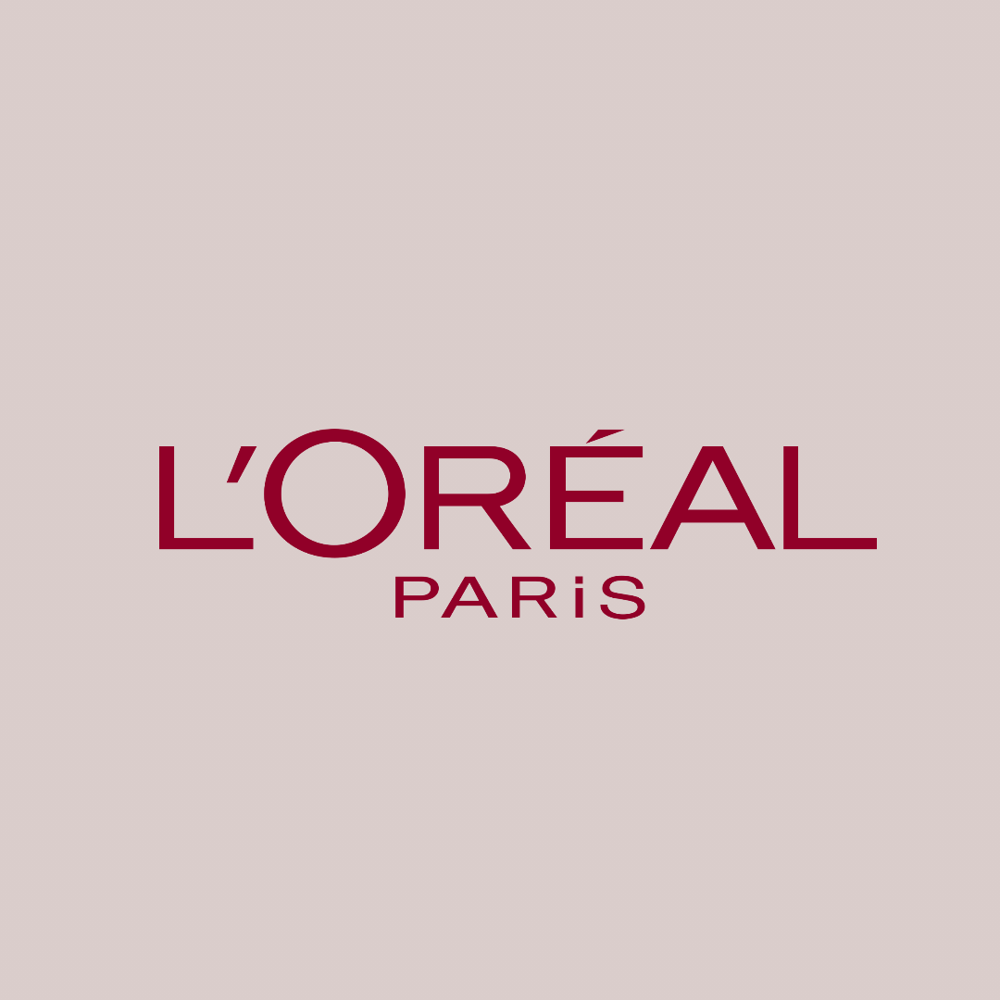
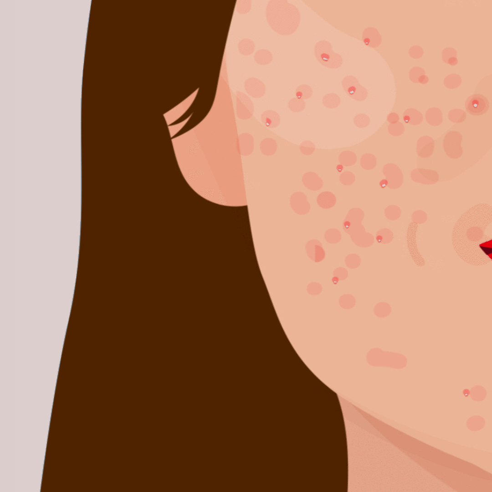

Hydroquinone is the main bleaching agent that inhibits melanin production found in many skin lightening products.
According to Evelyn Glenn, skin cancer, mercury poisoning and dermatitis were traced back to the excessive use of hydroquinone,
which resulted in the ban of many skin lightening products in Europe in 2000. These products were not heavily regulated,
so any toxins could be incorporated in the formulas and consumers would not have a clue about the dangers of using them.

Major cosmetic companies that many are familiar with are L'Oreal, Lancome, OLAY, and Shiseido. While it is uncommon to see a diverse shade
range coming from these companies, it is quite easy to find several skin lightening products from them. These skin lightening products are easily
made available in drug stores and makeup stores.

Not everyone who uses skin lightening products has the intention of changing their overall complexion,
as these products are often used by people to treat hyperpigmentation, acne scars, stretch marks, and skin tone unevenness. For these users,
prescription skin lightening creams are generally only allowed to be used under the supervision of a doctor. Exfoliating to reveal brighter skin or
spot treating discoloration on the face with a product recommended by a dermatologist is fine, but there's no safe or effective way to lighten your entire body.